| 日付 | 2016年1月24日（日） |
|---|---|
| 山域 | 三浦半島 |
| メンバー | 家族（妻、長女・4歳、長男・2歳） |
| 山行形態 | 子連れ日帰り |
| アクセス | 電車 |
| ルート (Map) | 北鎌倉駅 (9:20) - (9:47) 天柱峰 - (10:13) 源頼朝像 (10:26) - (10:29) 源氏山 - (11:05) 稲荷神社 - (11:28) 鎌倉市街 - (12:39) 鎌倉駅 |
最近関東に雪が降ったため、山らしい山には行けなくなってしまった。
仕方がないので、雪の無さそうな鎌倉の源氏山に行く。1年ほど前に娘と2人で登った山だ。
今回は息子を全て歩かせる予定で、キャリアを持たずに出発する。
北鎌倉駅に到着する。標高25m。
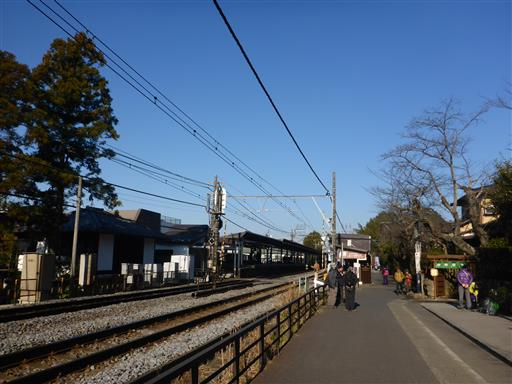
前回は車道が大混雑していたが、オフシーズンなので車の数は少ない。
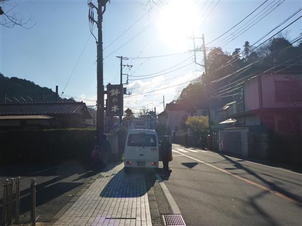
細い路地に入って登山口を目指す。
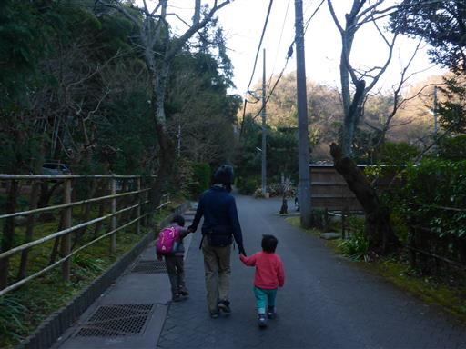
路地の突き当りが登山口だ。山に続く階段を登って行く。
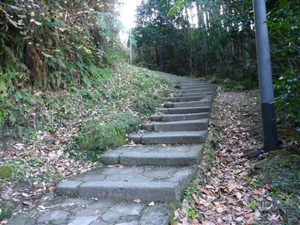
息子が椿の花を拾って遊んでいる。
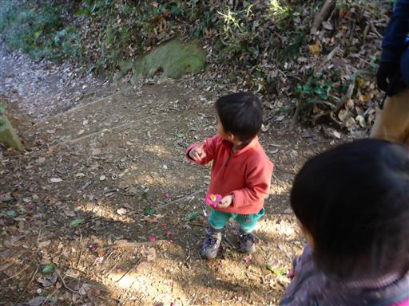
娘も椿の花を拾い出す。
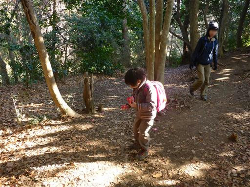
天柱峰に到着。木に囲まれた展望の無いピークだ。
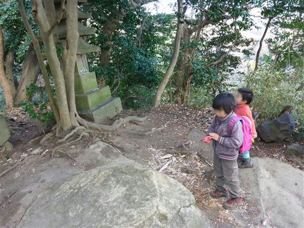
足元に住宅地が見える。こんな崖の側に住んでいて怖くないのだろうか？
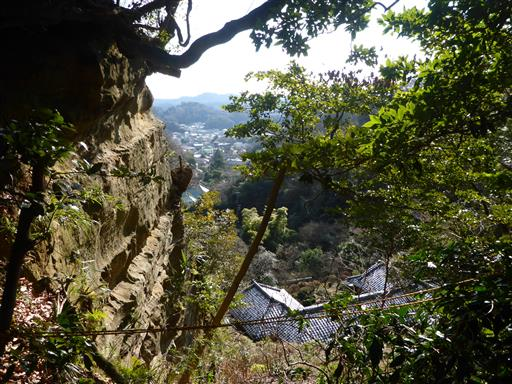
息子はどんどん歩いていく。前回娘と来た時よりも速いペースだ。
ここ最近、山道のような悪路でもこけずに歩けるようになってきたが、
駆け足で進んでいくので、かなり危なっかしい。
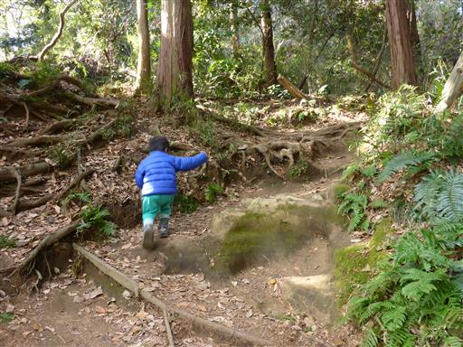
源氏山公園に到着する。
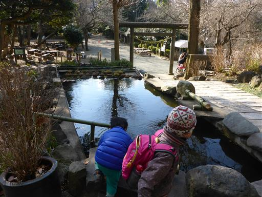
葛原岡神社に寄り道してお参りする。
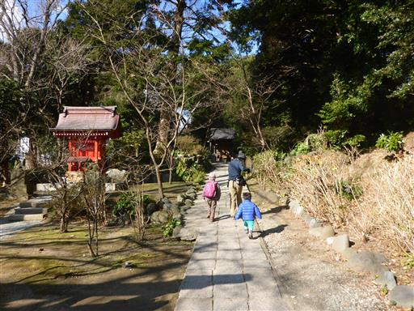
公園内は閑散としている。この寒さでは当然だろう。
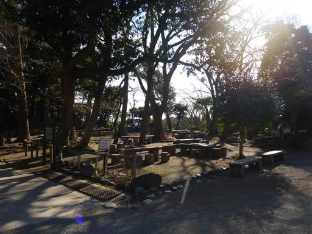
源頼朝の銅像が置かれている場所でおやつ休憩。
本日は行程が短いため、昼食は下山後に取る予定だ。
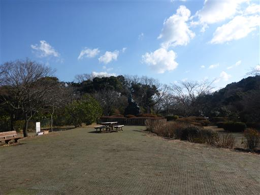
最後の小さな階段を登って山頂に向かう。
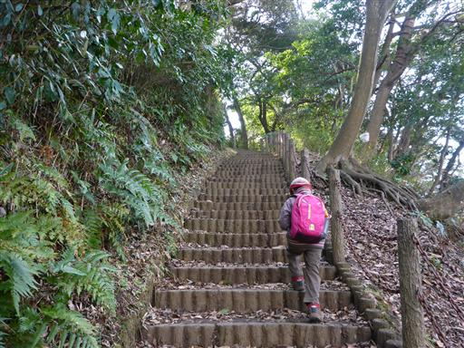
源氏山山頂に到着。標高93m。
いつ来ても地味な山頂だ。
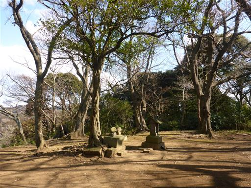
展望は少しだけ開けている。
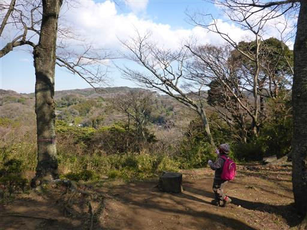
山頂標識の無い山頂だと思っていたが、よく見ると小さな標識がある。
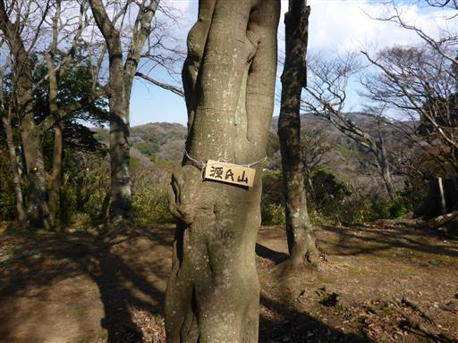
本日は晴予報だったが、北側は分厚い雲が出てきている。
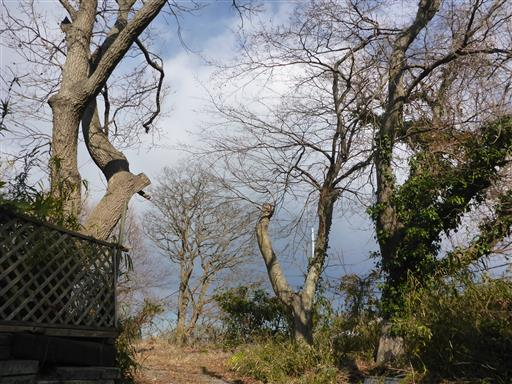
源氏山公園から続く車道を歩いて先に進む。

相模湾が光っている。海側は良く晴れている。
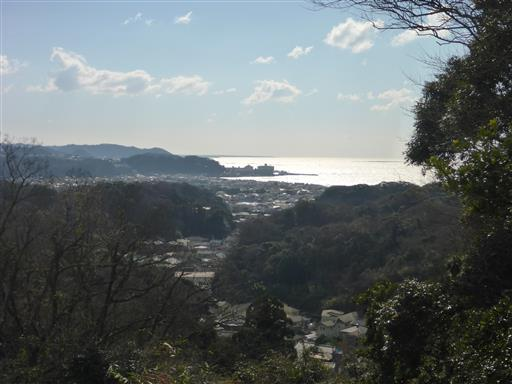
分岐点。前回は右の大仏切通に続く道を行った。今回は左の道から下山する。
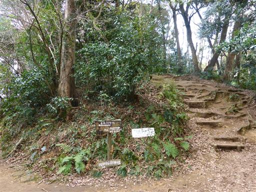
こちらの道は歩く人が少ないため、結構細い。
と言っても、距離は非常に短いためあっという間に通り過ぎる。
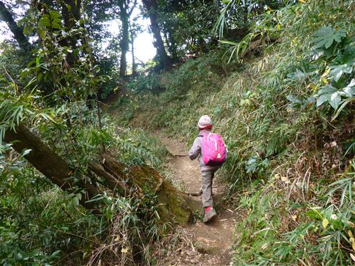
最後の稲荷神社に下るところは急坂だ。
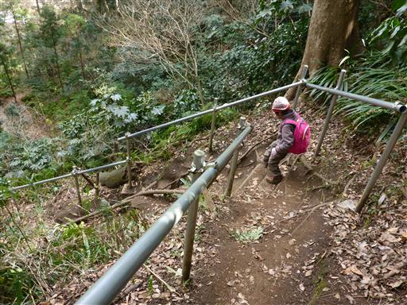
本日は息子も手でぶら下がることなく、真面目に下っている。
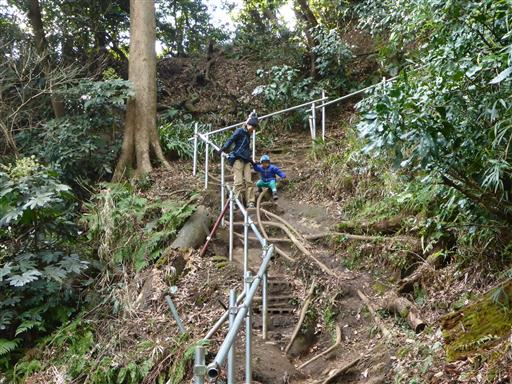
稲荷神社に到着。
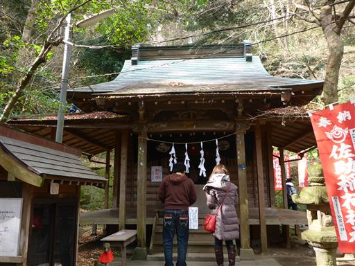
狐が祀られている。
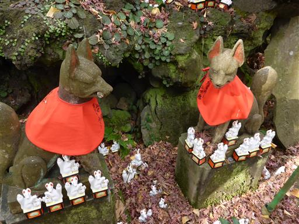
赤い鳥居がたくさん並んでいる。
神社の裏から下りてきたので、鳥居を潜って境外に出る。
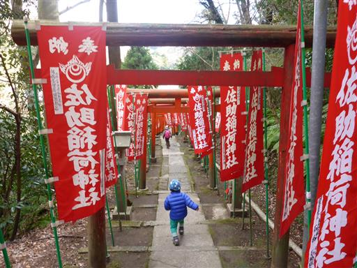
車道を歩いて鎌倉駅に向かう。
途中「ガーデンハウス レストラン」という店で昼食をとる。
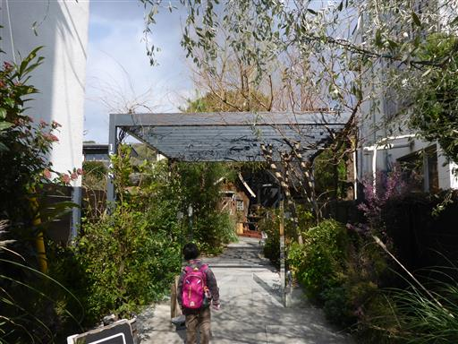
娘がデザートとうるさいので「サンルイ島」という店でアイスを食べる。
残念ながらイートインスペースが無く、寒い中で震えながらアイスを食べる。
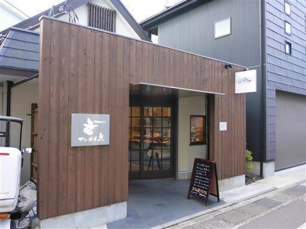
鎌倉駅に到着。標高10m。娘は人力車を興味深そうに眺めている。
今回は息子が初めて全ての行程を歩き通した。
次回はもう少し山らしい山に挑戦してみたい。
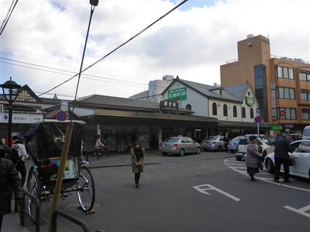